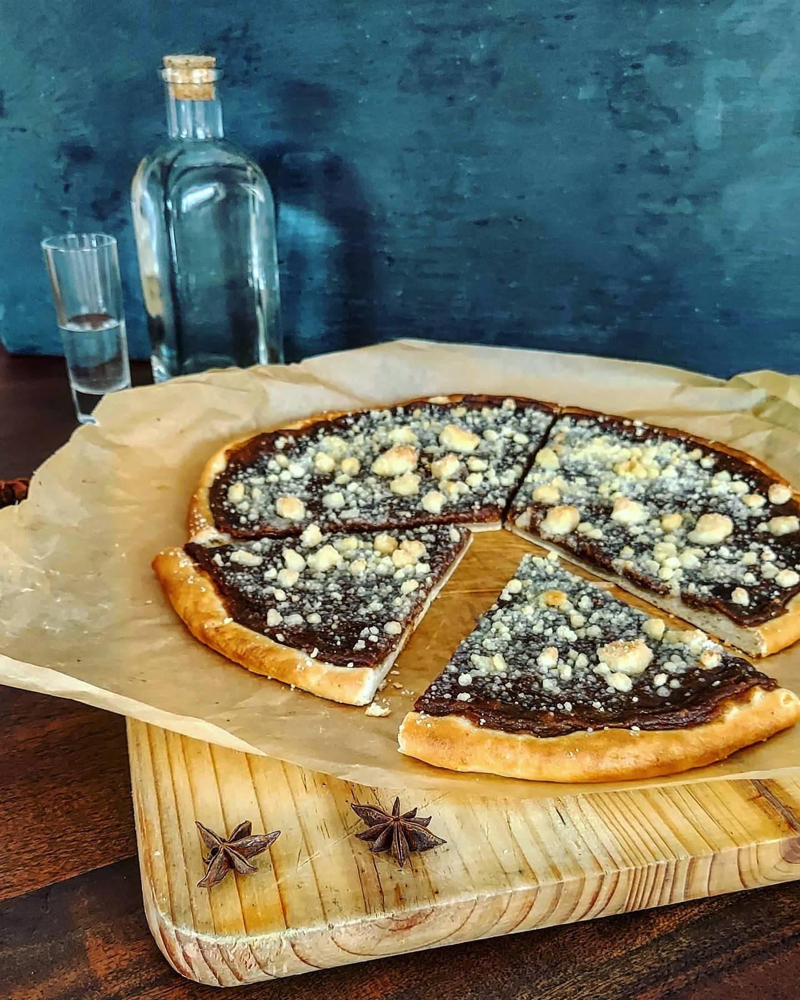

Hruškový koláč podľa @iv_v_kuchyni — Normy Jedál
Co takhle hruškový frgálek s domácí hruškovici? 😉👍 kdo by si dal? ?
#hruskovyfrgal #frgal #valasskyfrgal #hruskovykolac #🍐 #gruszka #kynutetesto #ciastodrożdżowe #ciasto #pear #pearpie #pie #homebaking #baking #homemadepie #eatcaptureshare #czechfood #tradicional #valassko #wypiekidomowe #wypieki #pychotka #kekaficku #vkuchyni #dnespecu #domacipeceni #peceni #pecenijeradost #foodstylist #kolac